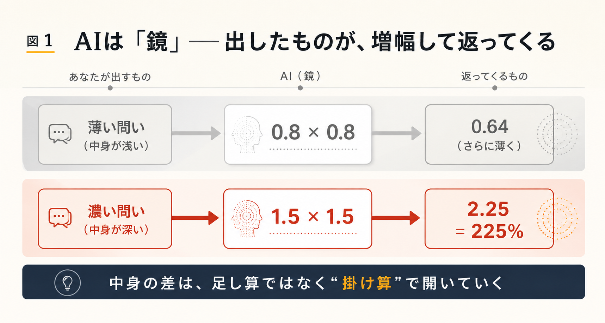
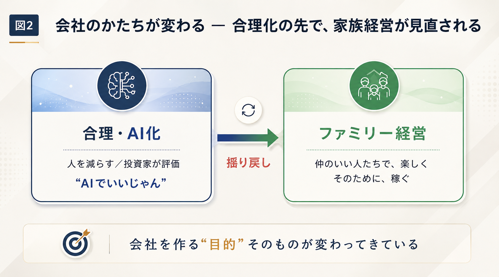

第一部 ── 一冊の冊子から
翌日には、本になっていた
対話は、管野先生自身の「体験」から始まります。この番組の少し前、管野先生は保護者向けに、太平洋戦争についての講話を行いました。日中戦争の発端となった盧溝橋事件1から、ミッドウェー海戦、ガダルカナルの戦いまで、三時間におよぶ長い語りです。それを中村が録音し、AIにかけました。
管野私は本当にびっくりしたんですよ。あれだけ長く喋った内容が、もう翌日には一冊の冊子になって出てきた。しかも、私が話した内容が、ちゃんと皆さんに語りかけるように、抽象化されて整理されている。行方不明の兵士の話にも、「これには諸説ある」と根拠がちゃんと図で出てくる。さらにそれを参加者にお配りしたら、大変喜ばれて ── 中には、戦争に行ったおじいさまの仏前に、その冊子をお供えしたという方までいたんです。
管野先生は、もう一つの「体験」も語ります。我孫子にゆかりの深い文学者、志賀直哉2と「対話」できるという仕掛けを、試してみたときのことです。
管野志賀直哉が、実際に喋るんですよ。私が「弟子の阿川弘之さんについてどう思いますか」と聞いたら、「いや、阿川くんはね」と答えるわけです。「あの人はなかなかの人物なんだけど、私も時々厳しいことは言いましたがね」と。それが、ちゃんと阿川さんの伝記とも一致している。不自然なところが全然なくて、本当に志賀直哉が話しかけてくる実感が湧いた。これはすごいな、と。
それまで管野先生にとって、AIは「出来のいい人工知能」という言葉が先行しているだけの存在でした。それが、社会や仕事の進め方をどう変えていくのか。番組は、その問いから始まります。
第二部 ── AIは鏡である
§1 ── 出したものが、返ってくる
管野まず、社会というものが、AIによってどう変わっていくと、中村さんはお考えですか。
中村もう、僕の実感としてはガラッと変わっていて、この番組に出る前と後で、世界がまるっきり違って見えているくらいなんです。管野さんもおっしゃった通り、ご自身が話したことが、翌日にはもう本のようになって皆さんが読める。何かをやったときのアウトプット ── 本でも音楽でも ── が、一瞬でできてしまう。だから僕は、AIって、鏡みたいなものだと思っているんです。
管野鏡、ですか。
中村そう。自分の中に何もない人がAIと語っても、AIからは何も出てこない。適当な返しが出るだけです。でも、あの戦争の話のように、三時間ぶんの濃い中身があると、AIもそれに見合った濃い対応を返してくる。こちらが映したものが、そのまま返ってくるんです。
ここで中村は、「本ができるまで」の昔と今を比べます。
中村今までは、喋った後に本にするには、文字起こしをする人、構成をする人、出版する人 ── いろんな人がいて、その連携があって、初めて形になった。喋って翌日に本になるなんて、ありえない。
管野半年ぐらいはかかりますよね。
中村しかも、途中のどこかで止まって、結局本にならなかった、ということもよくある。それがAIを使うと、あっという間にアウトプットされる。だから、その人が話した内容が良かったのかどうか、フィードバックがすぐに返ってくる。仏前にお供えした、なんていう反応も、配った翌日にはもう僕のところにメールで届きました。
地道にやってきた人が、正しく報われる
この「即座のフィードバック」を、中村は単なる時短の話にとどめません。
中村これは言い方を変えると、ちゃんとしたことを、地道にやってきた人に対しての評価が、正しく返ってくるということなんです。AIは手を抜くための道具じゃない。むしろ、地道に中身を積んできた人が、それにふさわしい評価を、適切な時期に、素早く受け取れるようになる。
管野結局、AIが何でもかんでもできる、という話じゃないんですね。話す人の持っている素材が薄っぺらだと、それなりのものしかできない。中身のある人のものは、瞬時に、評価に耐えうるものが出てくる。
中村それに、一つの能力に秀でた人がいても、それを「本にする」のは、また別の才能だったりするじゃないですか。事務作業が苦手とか、まとめるのが苦手とか。そこにAIが間に入ってコラボレーションすると、足りない分を補ってくれる。一つ抜きん出たものがある人ほど、AIを使う価値が出てくるんです。
管野私は以前から、教育論として「平均的にどの教科もいい、だけでは使い物にならない。得意教科を持て」と主張してきたんですけれど、まさにAIの時代になると、それが加速されると。平均的なものは、AIがどんどん作ってしまいますからね。
§2 ── 言葉にできない人ほど、伸びしろがある
では、自分では気づいていない「隠れた良さ」も、AIは引き出せるのでしょうか。
中村あります。むしろ、言語化できている人よりも、言語化できていない人のほうが、伸びしろがある。たとえばアーティストで、絵はうまいけれど、なぜうまく描けるのかを説明できない人。運動が得意だけど、なぜ得意なのか言葉にできない人。そういう人の「言語化」を、AIはすごくうまくやってくれるんです。
管野言語化をうまくやる、というのは。自分が絵がうまい理由を、並べてくれるということですか。
中村AIと何度も会話していると、これまで「なんとなくこうかな」だったものが、だんだん自分でも自覚できるようになる。AIと会話するうちに、自分の言語能力そのものが上がっていくんです。潜在意識にあった本音のようなものが、対話の中で浮かび上がってくる。だから、セラピー的な使い方をしている人もいます。人に話すより、AIになら話せる、という。
管野問いかけて、答えが返ってきて、それにまた問いかけるうちに、自分でも気づかなかった深い部分が浮上してくる。
中村逆に言うと、自分の中に何もない人は、いくら会話しても何も出てこない。「AIを使っても、適当なことしか言わない」「嘘しか言わない」と感じる人は、AIに問題があるというより、実は自分の側に原因があるかもしれない ── そこに気づかないといけないんです。
八十点か、百五十点か
中村は、これを一つの「掛け算」で説明します。
中村自分が八十点ぐらいの問いを投げると、AIも八十点で返してくる。それは、〇・八かける〇・八で、六十四点になってしまう。でも、自分の中に「百五十点で返したい」という何かがあると、AIもそれに応えてくる。一・五かける一・五で、二・二五 ── 二二五パーセントになって返ってくるんです。
管野指数関数的に変わる3、ということですね。これは、皆さんどう思いますか。「AI時代が来て、便利になってよかった」と、ただ喜ぶんじゃない。むしろ、勉強することが大切になる、ということですよね。内面の知識や関心が深くないと、結局その人のレベルに応じたものしか返ってこない。知識、経験、どれだけ深く考えているか ── そういう人間力のある人とない人とで、AIを使っても、かえって差はどんどん開いていく。

§3 ── 会社から、人が減っていく
話は、企業の姿へと移ります。
中村合理的に楽をしようと思っている人の仕事は、最終的にAIが代わりにやってしまう。すると企業は、その人を雇う必要がなくなる。だから、会社の人は間違いなく減っていく。アメリカでは、ベンチャーキャピタル4 ── 企業に投資する専門の集団ですが ── が、今、人間が多い企業には投資をしなくなってきている。「社員がAIじゃないと評価しない」という方向に、傾き始めているんです。
管野つまり、社員が何千人もいる大会社が、投資家から見るとむしろ避けられる。日本人はずっと、「いい大学を出て、大きな会社に行くのが安泰だ」という価値観でやってきた。高度成長期にできあがった、その価値観が、逆になる、ということですか。
中村アメリカ的な合理性で言えば、そうなります。会社を「国債の利回りを上回る収益を出す装置」として見る投資家からすれば、人が多くて収益が上がらない会社は、評価されない。ただ ── これはこれで、アメリカでも問題になっているんです。
「答えを急がない人」の価値
中村僕が思っているのは、その逆のことでもあって。「この人は、仕事の効率としてはそこそこだけど、いてくれるとチームが回る」という人がいるじゃないですか。よくネガティブ・ケイパビリティ5と言いますけど ── すぐには答えを出さない力。AIはすぐ答えを出す。人間でも、面倒だからと放置して答えを出さない人はダメですが、よく考えてから答えを出す人は、逆に評価される可能性がある。AIがやる「すぐ返す」個体とは別の、人間にしかできない個体として。この能力は、これから意識して鍛える必要があると思います。
管野そうすると、総務、営業、財務といった部門の、事務的な作業は、かなりいらなくなりますね。
中村そもそも、これから会社を起業するときには、最初からそういう部署を作らない、ということになる。
§4 ── そして、家族経営が見直される
ところが、話はここで意外な方向へ折り返します。
中村合理性を突き詰めると、「もうAIでいいじゃん」となってしまう。その時代が来て、大変なんですけど ── 逆に、その時代になると、「ファミリー的な価値観って、良かったよね」という揺り戻しが起きる。今、アメリカでも、日本的な家族経営の会社が、逆に評価され始めているんです6。
管野家族経営というと。私なんかも、役員に妻を置いたりしていて、それは「家族経営ですね」と、一段低く見られるのが普通だったんですけれど。
中村それが、評価されるようになる。会社を作る目的そのものが、変わってきているんです。投資価値以上のものを出して株主に還元する ── そういう会社だけじゃなくて、「仲のいい人たちで、どうやって楽しく暮らすか。そのために、お金を稼ぐことを、ちょっと楽しく考えてやりましょう」という方向。
管野ライフスタイルそのものが変わる。単に収益を上げて株主に還元するのではなく、会社を回していくこと自体が楽しみで、そこで働く人も楽しく仕事ができる。そういう価値観が大事だと、AIによって、逆に思わされる、と。面白いですね。

第三部 ── 次回へ
第一夜は、こうして幕を閉じます。管野先生は、次回への橋を架けます。
管野今の話を聞くと、古い教育観を持っている親御さん ── 「ガリ勉して大企業に行けば安泰だ」と思っている人は、考え方を変えないといけない。学校教育そのものも、変わらざるをえない。じゃあ次回は、AIによって、教育はどう変わるのか。その話を、お聞きしたいと思います。
ご家庭で話してみてください
この対話を「読んで終わり」にしないために、今日から試せる小さな三つを置いておきます。
1.「鏡」に、何を映すか。
AIに何かを尋ねて、答えが浅いと感じたとき ── その問いに、自分の中身がどれだけ乗っていたかを、振り返ってみてください。薄い問いには薄い答えが、濃い問いには濃い答えが返ってきます。
2. 家族の「一つ抜けた得意」を、言葉にしてみる。
お子さんや家族の「なぜか得意なこと」を、なぜ得意なのか、一緒に言葉にしてみてください。本人も気づいていなかった強みが、輪郭を持ち始めることがあります。
3.「すぐ答えを出さない」時間を、責めない。
考え込んで、答えが遅い ── それは欠点とは限りません。じっくり考える力（ネガティブ・ケイパビリティ）は、AIには代えがたい、これからの人間の強みです。